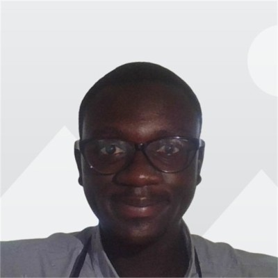

Hi, I'm A. Sabit Ariff.
I'm a full-stack developer passionate about creating innovative solutions, especially those that integrate AI, 3D technology, and user-centered design.
My background uniquely combines technical expertise in software engineering and a keen interest in algorithmic problem solving, making me well-suited for dynamic tech roles.
I'm driven to leverage these skills in a remote, collaborative environment where I can contribute to impactful projects while also staying committed to my athletic pursuits.
